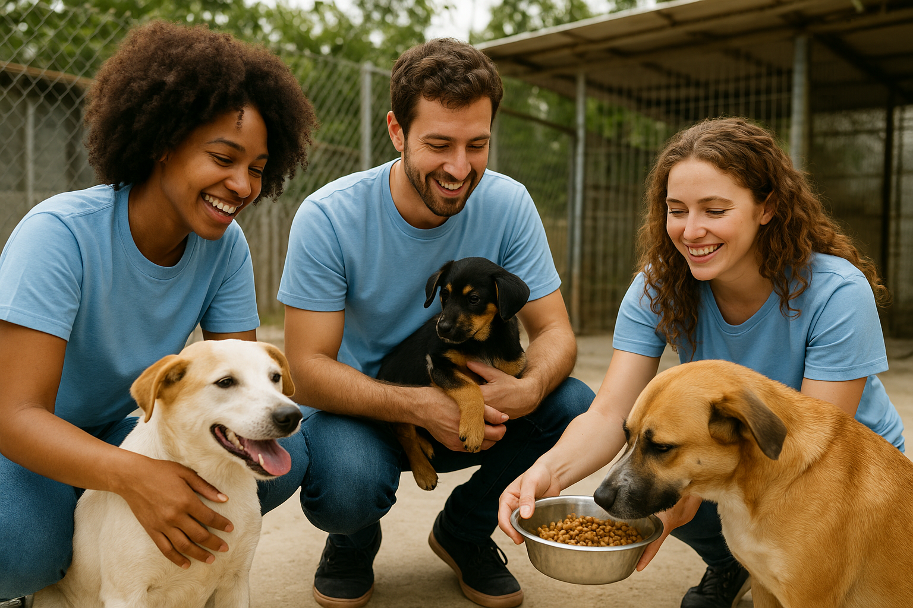

Bem Vindos ao Lumie - Resgate e Adoção de Animais!
Seja um voluntário
Cada voluntário contribui com tempo, energia e amor, ajudando a transformar a vida de muitos animais.

Participar é simples:
Basta ter vontade de ajudar e responsabilidade com os compromissos assumidos.
As principais áreas de atuação incluem:
- Cuidados diários: auxiliar na limpeza, alimentação e bem-estar dos animais.
- Eventos: colaborar em feiras de adoção e campanhas de conscientização.
- Apoio administrativo: ajudar na divulgação, redes sociais e organização de doações.
Ser voluntário é mais do que doar tempo — é fazer parte de uma causa que salva vidas e espalha amor.